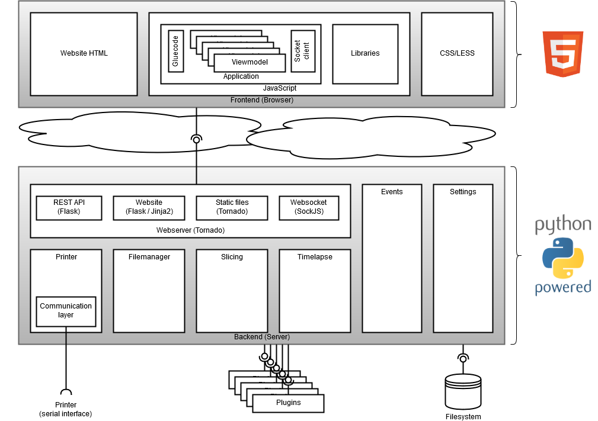

Driving 3D Printers with Python
Lessons Learned

Gina Häußge / @foosel & @OctoPrint3d
PyConDE 2019

Architecture
Target audience & platform
-
Audience: Owners of 3d printers = makers & tinkerers, some businesses
- end users
- rarely developers themselves
- Platform: Small single PCB linux computers (Raspberry Pi)
- e.g. Raspberry Pi
- but: platform agnostic!
Challenge #1
Initial installation and keeping things up to date
Initial installation
-
Initial installation happens by the end user
- üò± Bootstrap Python &
pip install octoprint - üòä Preconfigured Raspberry Pi image: download, flash, wizard, done
- üò± Bootstrap Python &
-
And on something that is not a Pi?
- Huge variety of encountered environments (Linux, Windows, Mac, FreeBSD, ...)
-
Code needs to anticipate that
- E.g. IPv6 dual stack on Windows
Keeping things up to date
-
OctoPrint itself
- üò±
pip install -U octoprint - üòä Built-in update mechanism for OctoPrint & plugins
- üò±
-
Rest of the environment
- Done by some users, not by others, conflicting information
-
You are using pip version 10.0.1, however version 19.2.3 is available. You should consider upgrading via the 'python -m pip install --upgrade pip' command. - Result: unknown environment, sometimes broken environment, hard to test, additional support overhead
What about the image itself?
-
"Never touch a running system!"
- Software stack quickly outdates
- üí° Disable OctoPrint updates on ancient setups & provide migration path
Lessons Learned
Try to control runtime environment but stay flexible, make updates easy and use features as motivator for touching a running system.Challenge #2
Maintaining backwards compatibility for 3rd party plugins
Maintaining backwards compatibility for 3rd party plugins
- Plugin system since 2015 (1.2.0), over 170 plugins
-
Established plugin ecosystem => this is suddenly a platform that needs stability
- Disgruntled authors = no ecosystem = disgruntled users
- Problem: Dependency updates with breaking changes
- Problem: Code refactoring
- Problem: Python 2 vs 3
Lessons Learned
Read changelogs of dependencies (if you can find them), aggressively do version pinning, be prepared to work around breaking changes, make life easy for plugin authors.Challenge #3
Performance
Performance
- Webinterface + several clients + keeping a printer running + plugins + ... ü§™
- Locked to one thread at a time (GIL)
- CPU bound tasks (message parsing, checksums, file analysis, ...)
- Multiple processes non trivial due to needed data sharing (plugins)
- Underlying platform often limited (RPi)
Lessons Learned
Extract CPU bound tasks if possible, be very conservative with resources, explore IPC options.Challenge #4
No proper protocol specification
No proper protocol specification
- No standard (mutation of GCODE CNC standard, sent/received over serial)
- Responses undefined, requests mostly not well defined
- "Specification" is a wiki page everyone can edit
-
There be dragons! üêâ And they be huge!
- New printer models cause issues again and again
- As do very old ones (almost no one does
git merge upstream...) - Introduces significant parser overhead and maintainence nightmares
Lessons Learned
Try to keep up ü§∑‚Äç‚ôÄÔ∏è and use plugins for quick workaroundsChallenge #5
Support overhead
Support overhead
-
Early days: Huge overlap between printer owners & DIY enthusiasts
- Tinker happy
- Google around for a solution
- Capable of fixing stuff themselves
-
These days: Lots and lots of consumers
- Many owners never had to tinker before
-
OctoPrint might be their first interaction with Open Source
and they might think they are dealing with a full blown company with support staff
Lessons Learned
Community building to delegate support (e.g. central forum) - let people help each other!Thanks for your attention!
Website: octoprint.org
Forum: community.octoprint.org